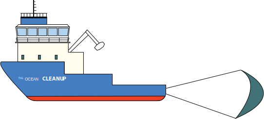

Earth's clear Oceans

Earth's Oceans and water encompass most of Earth's surface. The nature and life in water, such as plankton, fish and seaweed represent abundant resources, but they also help regulate the ecosystems, keeping our environment stable.
Earth's active Oceans


The majority of humankind lives on the coast or close to it, as the Oceans have provided sustenance, mild climates and easier, more efficient travel. Wind power from oceanic winds is another boon more utilized in modern times. Of course, the Oceans and oceansides are also used for recreation. Not all humans behave responsibly with the Ocean environment though...
Earth's changing Oceans

Plastic pollution in the Ocean is a serious problem, that has been building up for decades. There are estimates that there could be more plastic than fish in the Oceans by 2050...
Earth's utilized Oceans


Plastic largely comes from waste dumps and a few major rivers in the World. In Norway, the majority of plastic waste in the Oceans are locally sourced (so what you throw in nature will stay in your environment), and the majority of plastic waste stems from the fishing industry and aquaculture, lost fishing nets very much included. Fish and aquatic life may be stuck in these nets, to their and our detriment.
Earth's affected Oceans
Earth's impacted Oceans
Pollution and garbage in the Oceans, Seas, lakes and/or rivers can lead to important animals and plants dying, and unfortunate algae growth that disturb the ecosystems.
Earth's aided Oceans

However, taking action can turn things around. One example is the Ocean Cleanup project which operates in the Pacific Ocean, cleaning up around the Pacific Garbage Patch. There are similarly initiatives to intercept garbage in the major polluting rivers in the world. Locally too one can help, beach cleanups and preventing garbage and waste from reaching the waterways. One local success in cleaning up includes stopping pollutants seeping into Mjøsa lake in Norway, where fertilizers and wastewaters led to unfortunate algae growth and polluted waters decades ago. Lakes and rivers too should be kept clean, and efforts matter!